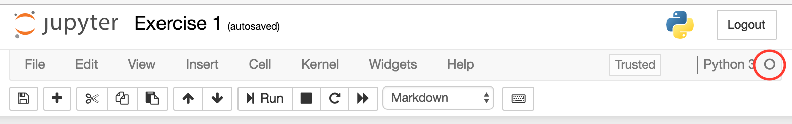
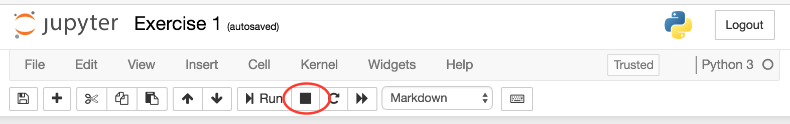
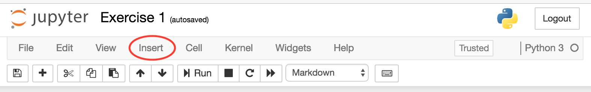
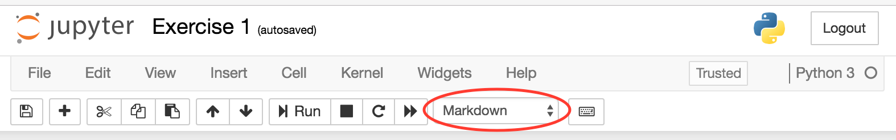

Exercise 1 - Getting started with Jupyter and Python
Contents
Exercise 1 - Getting started with Jupyter and Python¶
Andrew Valentine - andrew.valentine@anu.edu.au
In this course, we will make use of the RSES Jupyter server. This lets you write and run code on a remote server using nothing more than a standard web browser. ‘Jupyter’ is the software framework that makes this work. Jupyter can be used to provide an interface to a variety of different programming languages, but in this course we will concentrate on Python.
The page you are looking at now is an example of a Jupyter ‘notebook’. This allows us to mix text, code and results, and provides a great format for structuring and keeping track of your thoughts and ideas as you work on a project. This is not the only way to write and run Python programmes, and later in the course we will discuss some alternatives that might be better for large, complex programs - but for many straightfoward data analysis tasks the notebook format is ideal.
Using Jupyter¶
Jupyter is built around the concept of ‘cells’. There are two main types of cell: ‘Markdown’ cells, which are used for text (you’re reading a Markdown cell now!), and ‘Code’ cells, which are used for writing code. Here’s a code cell:
print("Welcome to Jupyter!")
The grey box contains some Python code, which is editable. If you click in this box, and then press Shift+⏎ (i.e. hold down the Shift key on your keyboard and then hit the return key) the code will be run, and any output is displayed below the grey box.
➤ Try changing the message in the above cell, and run it.
You can also run cells by clicking the ‘Run’ button in the toolbar, as highlighted here:

However, it’s good to get into the habit of using Shift+⏎, as it is much more convenient when you’re working on a big project.
Only one cell can run at any time. Two things show that a cell is currently running. First, on the right of the menubar is an open circle, as highlighted here:

This changes to a filled circle while code is being executed. Secondly, to the left of each code cell is a cell number, such as
In [3]:
While a cell is being executed, this will change to show an asterisk instead of a number:
In [*]:
The example above executes so quickly that it is difficult to see these changes. To make it more obvious, we can make the computer ‘sleep’ (do nothing) for 15 seconds before printing a message:
import time
print("...zzz....")
time.sleep(15)
print("I'm awake again now!")
...zzz....
I'm awake again now!
➤ Execute the above cell, and notice the two indicators that something is running.
If we want to stop the cell without waiting for it to finish naturally (perhaps we’ve realised we made a mistake in the code), we can click on the ‘stop’ button in the toolbar:

The execution should finish immediately, and you will see an error message printed to the screen to highlight the fact that the cell didn’t finish ‘normally’.
**➤ Run the above cell again, but this time use the ‘stop’ button to terminate execution. **
Markdown¶
Markdown is a lightweight markup language that you can use to add formatting elements to plaintext text documents. Markdown cells in notebooks allow you to write and describe your thoughts, code, equations directly in your program, making it more readable.
You can also edit markdown cells. If you double-click on this text, it will become editable (and be highlighted in green). Once you’ve made any changes, you can press Shift+⏎ and it will be rendered nicely on the screen. Notice that the highlighting changes back to blue.
➤ Try adding some text to this cell.
It is easy to make text in Markdown italic or bold. You can also:
Make bullet points
Including sub-bullets
Insert mathematical expressions using LaTeX syntax, e.g. \(y=3 \sin\left(\frac{(n+1)x}{2\pi}\right)\)
Markdown also enables nicely-formatted code blocks, for example this Python code:
def printHello(message):
print("Hello! "+message)
Note that this code is not executable, because Markdown cells are intended for displaying information rather than performing computations.
➤ Double-click on this cell to see how the text formatting is achieved. Try changing it!
If you want to know more about Markdown, plenty of information can be found online. This site might be one good place to start.
Adding and removing cells¶
New cells can be created at any point in the document. First, select the cell by clicking once on it (outside the editable area, if it’s a code cell). It should be highlighted in blue, to indicate that you’ve selected it but are not attempting to edit it. If it’s highlighted in green, press Esc on your keyboard to exit ‘edit’ mode. Now, you can either:
Press A or B to insert a new cell above or below the selected cell, or
From the menu bar, select
Insert→Insert Cell AboveorInsert→Insert Cell Belowas highlighted here
Again, you will probably find things much easier if you get into the habit of using the keyboard commands. By default, new cells are ‘code’ cells. You can change this using the drop-down menu in the toolbar:

Alternatively, while the cell is highlighted in blue, you can press M to make it a Markdown cell, and Y to turn it back into a code cell.
➤ Insert a new Markdown cell below this one, and write something in it.
As you work through these practicals, you are encouraged to add cells to record your notes and comments.
Of course, you can also easily delete cells. To do this, select the cell so that it is highlighted in blue, and either press the X key, or select Edit → Delete Cells from the toolbar. You can select multiple cells by holding down the Shift key.
➤ Delete the cell you added above this one.
It is also possible to cut, copy and paste cells, as you will have done when using many other programs.
First steps in Python¶
We’ve already seen a couple of examples of Python code. Now let’s try making something from scratch. One thing we can do is simply use Python like a calculator!
➤ Try typing simple arithmetic into the code cell below and see what happens. For example, try entering
3+17
and then hit Shift+⏎. You can also use the operators *, -, / (for division), and the parentheses (). Finally, ** is used to raise a number to some power, so that \(3^2\) is entered as 3**2.
# Try it here!
➤ What happens if you enter two lines of calculations before hitting Shift+⏎? Try something like
3+17
5*9
What are you seeing? Looking back at the code examples earlier in this notebook, can you work out how to get it to display both answers?
Comments¶
In the code cell above, you may have noticed the line
# Try it here!
which doesn’t look as though it ought to be valid Python code. This is a ‘comment’ line: the computer ignores the # and anything following it on the same line. Comments should be used to document information that helps people to understand how the code works internally. This may seem like a waste of time - but you (or your colleagues) will be grateful in two years’ time when you find you need to change something! The comment character can also be useful for ‘switching off’ lines of code without deleting them. For example, look at this piece of code:
def readDataFile(fp):
# This function assumes that fp is
# a valid file-like object and that the
# file has already been opened for reading
header = fp.readline()
# print(header)
[...]
The first three lines of comments provide information recording some of the assumptions the programmer made when writing this function (don’t worry if it doesn’t make sense yet!). The fourth comment line is a piece of code that has been ‘commented out’: we don’t want to routinely print the file header, but it is useful to be able to reinstate this easily in case we encounter problems and need to check what the function has read.
In fact, ‘commenting out’ code is so common that Jupyter provides a straightforward way to do it. If you select a block of code and press Ctrl+/ (or on a Mac, ⌘+/), the selected lines will all be changed to begin with # comment characters. Pressing Ctrl+/ again will restore the original version.